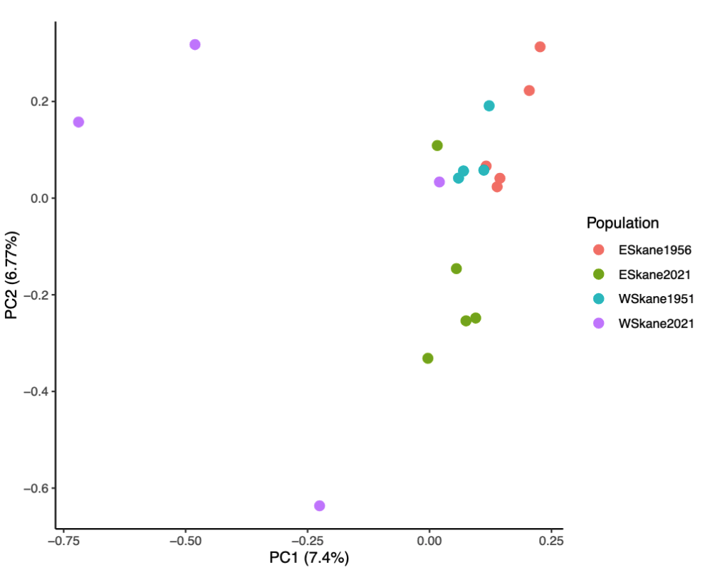

Extending or modifying analyses in PopGLen
Using PopGLen as a Snakemake module makes it easy to incorporate extensions to it in the Snakefile, enabling cusomization of the workflow. This means that you can extend upon the workflow with your own rules that use PopGLen outputs as their input, keeping the project as one contained workflow that can be easily reproduced. This functionality could also allow for replacement of some of PopGLen's analyses with alternative options, such as estimating the covariance matrix for PCA with single read sampling in ANGSD rather than the likelihood based approach of PCAngsd. Most of this is covered in Snakemake's documentation on modularization, and all methods described there should be compatible with PopGLen.
As an example, we will replace the PCA produced using PCAngsd in PopGLen with one produced using a covariance matrix from single read sampling using ANGSD. This should only really add one step, estimating the covariance matrix in ANGSD instead of PCAngsd. We start with a bare bones Snakefile that imports PopGLen as a module:
| workflow/Snakefile | |
|---|---|
1 2 3 4 5 6 7 8 9 10 11 12 13 14 15 16 17 18 19 | |
As is, it will run PopGLen as described in the documentation. To utilize a covariance matrix estimated by something other than PCAngsd when generating the PCA, we need to do two things: (1) add a rule to generate the covariance matrix with the other tool and (2) overwrite the input for the rule that runs the principal component analysis with this new covariance matrix.
We will do this by adding the code block below to the end of the Snakefile. It
first defines a rule, angsd_doCov, which generates the covariance matrix. This
is very similar to the angsd_doIBS rule already in PopGLen, so much of that
rule can be repurposed into this one. After we add the rule, we then simply
tell Snakemake that when it imports the rule plot_pca from PopGLen, it
should use this covariance matrix made by angsd_doCov instead of the one from
PCAngsd defined by default.
# Add a rule which estimates the covariance matrix, but from single read
# sampling in ANGSD rather than genotype likelihoods in PCAngsd
rule angsd_doCov:
"""
Estimates covariance matrix for all individuals.
"""
input:
bamlist="results/datasets/{dataset}/bamlists/{dataset}.{ref}_{population}{dp}.bamlist",
bams=popglen.get_bamlist_bams,
bais=popglen.get_bamlist_bais,
sites="results/datasets/{dataset}/filters/snps/{dataset}.{ref}_{population}{dp}_{sites}-filts_snps.sites",
idx="results/datasets/{dataset}/filters/snps/{dataset}.{ref}_{population}{dp}_{sites}-filts_snps.sites.idx",
output:
ibs=temp("results/datasets/{dataset}/analyses/covar/{dataset}.{ref}_{population}{dp}_{sites}-filts.ibs.gz"),
covmat="results/datasets/{dataset}/analyses/covar/{dataset}.{ref}_{population}{dp}_{sites}-filts.covMat",
arg="results/datasets/{dataset}/analyses/covar/{dataset}.{ref}_{population}{dp}_{sites}-filts.arg",
container:
popglen.angsd_container
params:
mapQ=config["mapQ"],
baseQ=config["baseQ"],
trans=popglen.get_trans,
out=lambda w, output: os.path.splitext(output.arg)[0],
threads: 2
resources:
runtime="1d",
shell:
"""
angsd -doIBS 1 -doCov 1 -bam {input.bamlist} -nThreads {threads} \
-doCounts 1 -minMapQ {params.mapQ} -minQ {params.baseQ} \
-sites {input.sites} -rmTrans {params.trans} -doMajorMinor 3 \
-out {params.out}
"""
# Update plot_pca rule to use the covariance matrix from angsd_doCov rather than
# from PCAngsd
use rule plot_pca from popglen as plot_pca with:
input:
"results/datasets/{dataset}/analyses/covar/{dataset}.{ref}_{population}{dp}_{sites}-filts.covMat",
"results/datasets/{dataset}/poplists/{dataset}_{population}{dp}.indiv.list",
For a substitution like this, these are the only changes we need to make. You can try running this Snakefile using the tutorial data to see it in action. These two methods actually produce quite similar results with the tutorial dataset (though the axis of PC2 is inverted, as its direction is arbitrary):
| PCAngsd covariance matrix | ANGSD -doCov covar matrix |
|---|---|
 |
 |
Extending workflows like this allows you to use PopGLen as a base for your project, adding additional analyses as you need them. If you have an analysis (or alternative tool for an analysis) that you feel suits PopGLen (i.e. is suited for low-coverage population genomics), but is not yet implemented, please feel free to open an issue and request its addition.